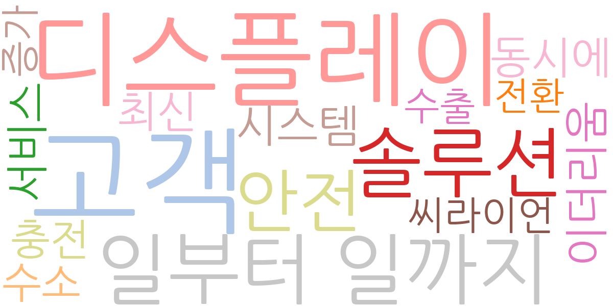
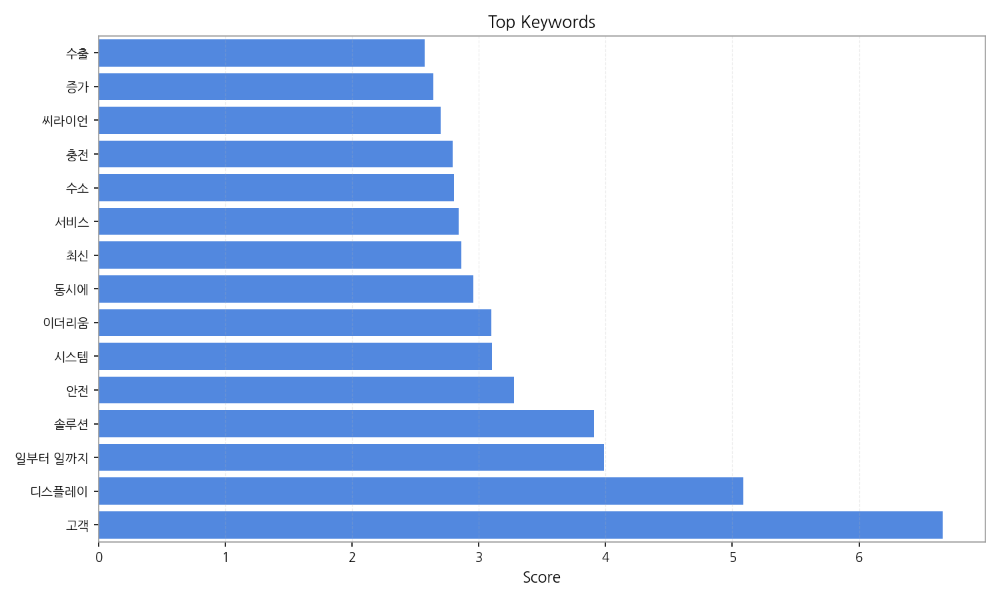
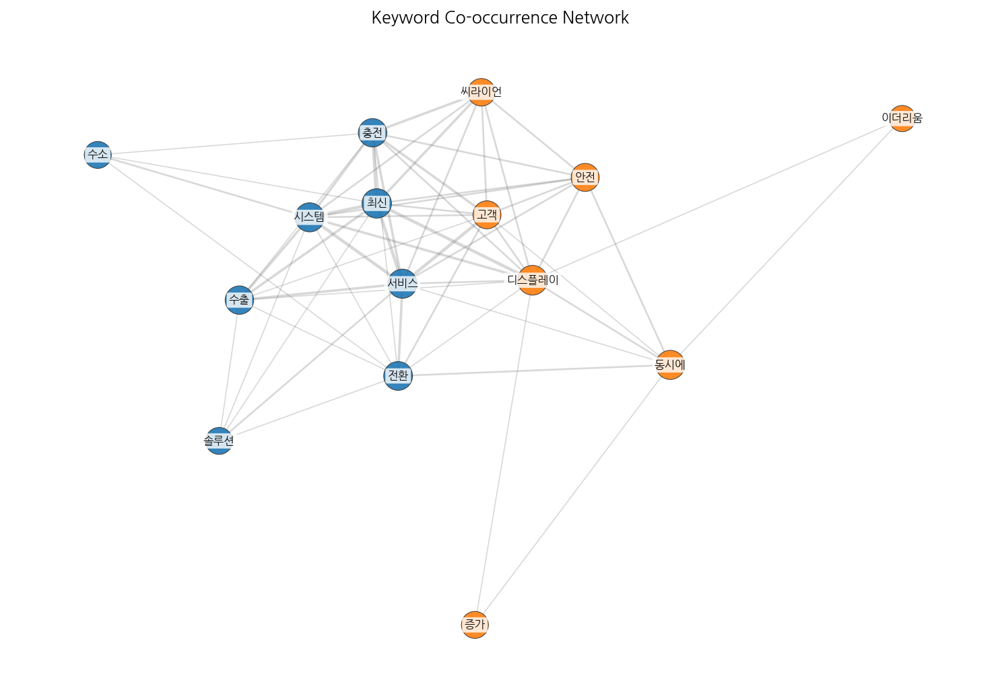
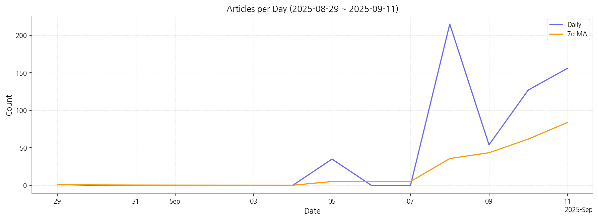

이번 기간 핵심 토픽과 키워드, 주요 시사점을 요약합니다.
핵심 맥락: 제공된 데이터는 2025년을 중심으로 국내외 산업 동향, 특히 디스플레이, 전기차 충전, AI 기술 관련 뉴스를 다루고 있습니다. OLED 수출, 국내외 디스플레이 시장 운영 및 안전, 차세대 디스플레이 기술과 바이오 기술 기반 혁신 등이 주요 내용이며, AI 기술의 발전과 투자 동향 또한 중요한 부분을 차지합니다. 전반적으로 2025년 기술 혁신과 산업 경쟁력 강화에 대한 뉴스가 집중되어 있습니다.
최근 변화/스파이크: 9월 8일 기사 수가 급증(215건)한 것을 볼 수 있습니다. 이는 특정 이벤트나 정책 발표 등으로 인한 집중적인 보도의 결과로 추정되며, 이후 9월 9일과 10일에는 다소 감소했지만, 9월 11일 다시 증가세를 보이고 있습니다.
실무 인사이트:
9월 8일 뉴스 분석: 9월 8일 급증한 기사들을 면밀히 분석하여 당시 발생했던 주요 이벤트 또는 정책 발표를 파악하고, 그 영향력과 향후 전망을 예측합니다. 관련 키워드를 중심으로 심층 분석을 수행하여 경쟁사 동향 및 시장 변화를 파악해야 합니다.

| Rank | Keyword | Score |
|---|---|---|
| 1 | 고객 | 6.661 |
| 2 | 디스플레이 | 5.087 |
| 3 | 일부터 일까지 | 3.989 |
| 4 | 솔루션 | 3.906 |
| 5 | 안전 | 3.275 |
| 6 | 시스템 | 3.104 |
| 7 | 이더리움 | 3.096 |
| 8 | 동시에 | 2.956 |
| 9 | 최신 | 2.860 |
| 10 | 서비스 | 2.843 |
| 11 | 수소 | 2.806 |
| 12 | 충전 | 2.794 |
| 13 | 씨라이언 | 2.700 |
| 14 | 증가 | 2.641 |
| 15 | 수출 | 2.574 |



핵심 맥락: 제공된 데이터는 2025년을 중심으로 국내외 산업 동향, 특히 디스플레이, 전기차 충전, AI 기술 관련 뉴스를 다루고 있습니다. OLED 수출, 국내외 디스플레이 시장 운영 및 안전, 차세대 디스플레이 기술과 바이오 기술 기반 혁신 등이 주요 내용이며, AI 기술의 발전과 투자 동향 또한 중요한 부분을 차지합니다. 전반적으로 2025년 기술 혁신과 산업 경쟁력 강화에 대한 뉴스가 집중되어 있습니다.
최근 변화/스파이크: 9월 8일 기사 수가 급증(215건)한 것을 볼 수 있습니다. 이는 특정 이벤트나 정책 발표 등으로 인한 집중적인 보도의 결과로 추정되며, 이후 9월 9일과 10일에는 다소 감소했지만, 9월 11일 다시 증가세를 보이고 있습니다.
실무 인사이트:
9월 8일 뉴스 분석: 9월 8일 급증한 기사들을 면밀히 분석하여 당시 발생했던 주요 이벤트 또는 정책 발표를 파악하고, 그 영향력과 향후 전망을 예측합니다. 관련 키워드를 중심으로 심층 분석을 수행하여 경쟁사 동향 및 시장 변화를 파악해야 합니다.
| Idea | Target | Value Prop | Score |
|---|---|---|---|
| 디스플레이 제조사 대상 AI 기반 예지보전 솔루션 | KR 디스플레이 제조사(LG디스플레이, 삼성디스플레이 등) / 생산 관리 부서 / 대기업 | AI 기반 예지보전 시스템으로 장비 고장을 예측하여 사전에 예방함으로써 생산 중단 시간을 최소화하고 유지보수 비용을 절감합니다. 경쟁사 대비 높은 예측 정확도를 제공하며, 실시간 모니터링 및 알림 기능을 통해 효율적인 관리가 가능합니다. 차별화 포인트는 고장 원인 분석 기능을 통해 예방적 유지보수 전략 수립을 지원하는 것입니다. | 4.50 |
| 전기차 충전소 운영 효율화 플랫폼 (KR) | KR 전기차 충전소 운영 사업자 / 중소기업 | 클라우드 기반 플랫폼을 통해 충전기 관리, 요금 정산, 고객 관리 등 모든 운영 과정을 자동화하여 운영 효율을 극대화합니다. 실시간 데이터 분석을 통해 충전소 운영 전략을 최적화하고 고객 만족도를 향상시킵니다. 차별화 포인트는 충전소 간의 네트워크를 구축하여 충전기 이용률을 높이는 기능입니다. | 4.00 |
| 사이니지 디스플레이 광고 플랫폼 (JP) | JP 사이니지 운영 사업자 / 광고 대행사 / 중소기업 | AI 기반의 정교한 타겟팅과 실시간 효과 측정 시스템을 갖춘 사이니지 광고 플랫폼을 제공합니다. 광고주에게는 효과적인 광고 집행을, 사이니지 운영 사업자에게는 수익 증대를 제공합니다. 차별화 포인트는 위치 기반 광고와 연동하여 효과를 극대화하는 기능입니다. | 3.50 |
| B2B 전자부품 조달 플랫폼 (EU) | EU 전자 제조업체 / 구매 담당자 / 중견·대기업 | 온라인 플랫폼을 통해 전자부품을 효율적으로 조달할 수 있도록 지원합니다. 다양한 공급업체의 부품 정보를 제공하고, 가격 비교 및 주문을 간편하게 처리할 수 있습니다. 차별화 포인트는 친환경 부품 인증 및 추적 시스템을 제공하는 것입니다. | 3.00 |
| 모빌리티 디스플레이 시장 분석 및 예측 데이터 서비스 (KR) | KR 자동차 부품 제조사 / 디스플레이 제조사 / 시장조사 기관 / 대기업 | 빅데이터 분석 기술을 활용하여 모빌리티 디스플레이 시장의 정확한 분석 및 예측 데이터를 제공합니다. 시장 규모, 성장률, 경쟁 현황 등을 상세하게 분석하고, 미래 시장 동향을 예측합니다. 차별화 포인트는 경쟁사 제품 분석 및 기술 트렌드 예측 기능입니다. | 2.50 |